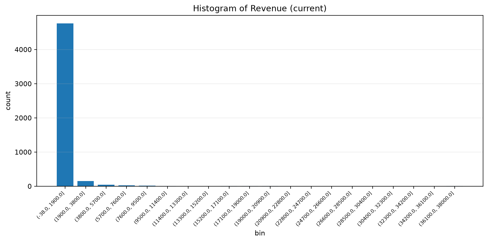

Automated profiling, diagnosis, evidence-aware recommendations, cleaning validation, visualization, machine learning, and prediction summary.
Overall quality score after approved cleaning actions.
Improvement: 9.96| Metric | Before | After | Meaning |
|---|---|---|---|
| Missing Values | 382 | 60 | Resolved 322 |
| Duplicate Rows | 33 | 0 | Removed 33 |
| Rows | 5035 | 5002 | Removed 33 |
| Columns | 23 | 23 | No structural column loss |

Unsupported chart preview.
No model has been trained yet.
No predictions generated yet.
| Issue | Severity | Confidence |
|---|---|---|
| missing_values | low | 95.0% |
| duplicate_rows | low | 90.0% |
| outliers | medium | 85.0% |
| # | Issue | Strategy | Columns | Confidence | Reason |
|---|---|---|---|---|---|
| 1 | missing_values | median | Customer_Age | 88.0% | Diagnosis detected missing values in Customer_Age. Knowledge rule 'age' recommends median imputation. Statistics show mean=35.9423 and median=36.0. |
| 2 | missing_values | mode | Region | 80.0% | Diagnosis detected missing values in Region. Knowledge rule 'region' recommends mode imputation. |
| 3 | missing_values | review_missing_values | City | 70.0% | Diagnosis detected missing values in City. |
| 4 | missing_values | median | Revenue | 97.0% | Diagnosis detected missing values in Revenue. Knowledge rule 'revenue' recommends median imputation. Statistics show mean=507.4374 and median=169.34. Interpretation: The mean is substantially above the median, suggesting an asymmetric distribution. Interpretation: Revenue appears... |
| 5 | missing_values | median | Customer_Satisfaction | 81.0% | Diagnosis detected missing values in Customer_Satisfaction. Statistics show mean=3.923 and median=4.0. Interpretation: Customer_Satisfaction appears left-skewed. Small values may be pulling the mean downward. |
| 6 | duplicate_rows | remove_exact_duplicates | - | 92.0% | Diagnosis detected exact duplicate rows. Exact duplicates can inflate counts, distort totals, and bias analysis. |
| 7 | outliers | domain_range_check | Customer_Age | 86.0% | Diagnosis detected outlier behavior in Customer_Age. Knowledge rule 'age' recommends domain_range_check. Statistics show skewness=0.4479 and kurtosis=0.7825. |
| 8 | outliers | review_or_cap | Quantity | 96.0% | Diagnosis detected outlier behavior in Quantity. Knowledge rule 'quantity' recommends review_or_cap. Statistics show skewness=17.1418 and kurtosis=408.8754. Interpretation: Quantity appears right-skewed. Large values may be pulling the mean upward. Interpretation: Quantity has he... |
| 9 | outliers | review_or_winsorize | Unit_Price | 96.0% | Diagnosis detected outlier behavior in Unit_Price. Knowledge rule 'unit_price' recommends review_or_winsorize. Statistics show skewness=8.702 and kurtosis=184.8562. Interpretation: Unit_Price appears right-skewed. Large values may be pulling the mean upward. Interpretation: Unit_... |
| 10 | outliers | review_or_treat_outliers | Gross_Sales | 86.0% | Diagnosis detected outlier behavior in Gross_Sales. Statistics show skewness=12.6195 and kurtosis=270.8405. Interpretation: Gross_Sales appears right-skewed. Large values may be pulling the mean upward. Interpretation: Gross_Sales has heavy-tailed behavior, suggesting extreme val... |
| 11 | outliers | domain_range_check | Discount_Rate | 96.0% | Diagnosis detected outlier behavior in Discount_Rate. Knowledge rule 'discount' recommends domain_range_check. Statistics show skewness=2.1336 and kurtosis=16.6757. Interpretation: Discount_Rate appears right-skewed. Large values may be pulling the mean upward. Interpretation: Di... |
| 12 | outliers | domain_range_check | Discount_Amount | 96.0% | Diagnosis detected outlier behavior in Discount_Amount. Knowledge rule 'discount' recommends domain_range_check. Statistics show skewness=8.8036 and kurtosis=113.0272. Interpretation: Discount_Amount appears right-skewed. Large values may be pulling the mean upward. Interpretatio... |
| 13 | outliers | review_or_winsorize | Revenue | 96.0% | Diagnosis detected outlier behavior in Revenue. Knowledge rule 'revenue' recommends review_or_winsorize. Statistics show skewness=13.224 and kurtosis=295.8814. Interpretation: Revenue appears right-skewed. Large values may be pulling the mean upward. Interpretation: Revenue has h... |
| 14 | outliers | review_or_treat_outliers | Cost | 86.0% | Diagnosis detected outlier behavior in Cost. Statistics show skewness=5.5726 and kurtosis=43.045. Interpretation: Cost appears right-skewed. Large values may be pulling the mean upward. Interpretation: Cost has heavy-tailed behavior, suggesting extreme values may strongly influen... |
| 15 | outliers | review_or_winsorize | Profit | 96.0% | Diagnosis detected outlier behavior in Profit. Knowledge rule 'profit' recommends review_or_winsorize. Statistics show skewness=11.164 and kurtosis=245.3158. Interpretation: Profit appears right-skewed. Large values may be pulling the mean upward. Interpretation: Profit has heavy... |
| 16 | outliers | review_or_treat_outliers | Delivery_Days | 79.0% | Diagnosis detected outlier behavior in Delivery_Days. Statistics show skewness=0.8642 and kurtosis=0.6586. Interpretation: Delivery_Days appears right-skewed. Large values may be pulling the mean upward. |
| Action | Issue | Strategy | Status | Columns | Rows Before | Rows After | Message |
|---|---|---|---|---|---|---|---|
| 1 | missing_values | median | success | Customer_Age | 5035 | 5035 | Applied median missing-value handling. |
| 2 | missing_values | mode | success | Region | 5035 | 5035 | Applied mode missing-value handling. |
| 3 | missing_values | review_missing_values | success | City | 5035 | 5035 | Applied review_missing_values missing-value handling. |
| 4 | missing_values | median | success | Revenue | 5035 | 5035 | Applied median missing-value handling. |
| 5 | missing_values | median | success | Customer_Satisfaction | 5035 | 5035 | Applied median missing-value handling. |
| 6 | duplicate_rows | remove_exact_duplicates | success | - | 5035 | 5002 | Removed 33 duplicate row(s). |
| 7 | outliers | domain_range_check | skipped | Customer_Age | 5002 | 5002 | Strategy is not executable yet. Manual review required. |
| 8 | outliers | review_or_cap | skipped | Quantity | 5002 | 5002 | Strategy is not executable yet. Manual review required. |
| 9 | outliers | review_or_winsorize | skipped | Unit_Price | 5002 | 5002 | Strategy is not executable yet. Manual review required. |
| 10 | outliers | review_or_treat_outliers | skipped | Gross_Sales | 5002 | 5002 | Strategy is not executable yet. Manual review required. |
| 11 | outliers | domain_range_check | skipped | Discount_Rate | 5002 | 5002 | Strategy is not executable yet. Manual review required. |
| 12 | outliers | domain_range_check | skipped | Discount_Amount | 5002 | 5002 | Strategy is not executable yet. Manual review required. |
| 13 | outliers | review_or_winsorize | skipped | Revenue | 5002 | 5002 | Strategy is not executable yet. Manual review required. |
| 14 | outliers | review_or_treat_outliers | skipped | Cost | 5002 | 5002 | Strategy is not executable yet. Manual review required. |
| 15 | outliers | review_or_winsorize | skipped | Profit | 5002 | 5002 | Strategy is not executable yet. Manual review required. |
| 16 | outliers | review_or_treat_outliers | skipped | Delivery_Days | 5002 | 5002 | Strategy is not executable yet. Manual review required. |